Основна складність із гумовим макетом – це забезпечити коректне відображення на різних дозволах, від високого до низького. Оскільки ми обмежили ширину контенту 760 пікселами, картинку в шапці варто розмістити так, щоб більша частина зображення вписувалася в цей розмір. На мал. показано, як це зробити. Темним кольором виділена центральна частина шириною 760px, буквою А позначені однакові по ширині фрагменти, що залишилися.
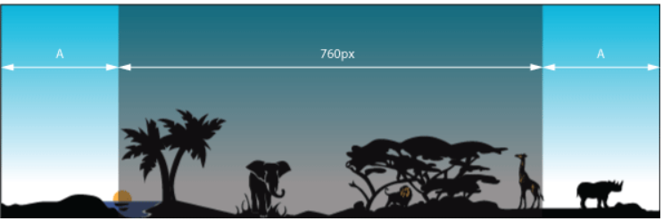Мал. Ширина шапки
Саме додавання картинки в шапці робиться через малюнок фону, який необхідно вирівняти по центру елемента <header>.
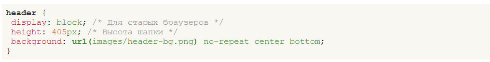В ідеалі малюнок повинен мати велику ширину від 2000 пікселів, тоді практично за будь-якої роздільної здатності монітора малюнок буде показувати центральну частину, обрізаючи все, що не поміщається у вікно. Але біда в тому, що спочатку картинка не настільки широка, а малювати чорні смужки, що нескінченно тягнуться з боків, не хочеться. Один із варіантів вирішення це включити повторення фону по горизонталі. Ті, у кого роздільна здатність 1280 пікселів за шириною і менше, побачать єдину картинку, а власники широких моніторів зможуть помилуватися відразу кількома тваринами і сонцями, що одночасно заходять. Тут важливо підредагувати малюнок так, щоб він без стиків поєднувався сам із собою по горизонталі. Градієнт для наочності захований.
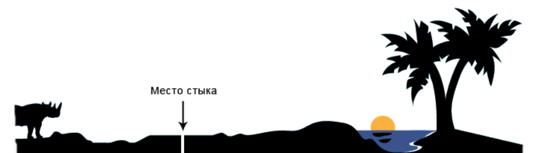Поєднання зображення по горизонталі
На цьому малюнку місце стику позначено стрілкою та проміжком, щоб стик можна було помітити. Якщо правильно відредагувати праву та ліву частину фонової картинки, то вона повторюватиметься по горизонталі без видимих стиків, як суцільний малюнок. Залишається трохи підправити стиль, замінивши значення no-repeat (без повторення) на repeat-x (повторення по горизонталі).
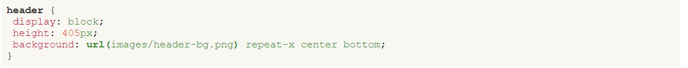На цьому можна вважати, що фоновий малюнок у шапці готовий
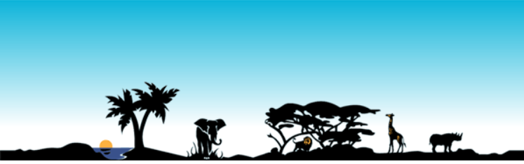Фонова картинка для шапки
У форматі PNG-24 файл із тлом розміром 1325х405 пікселів займає близько 32 Кб, а в PNG-8 з 256-колірною палітрою, де якість градієнта дещо гірша — близько 15 Кб. Можна розбити фон на дві складові частини — градієнт та картинку та зберегти кожне зображення у своєму форматі, що має призвести до підвищення якості відображення градієнта. Втім, 32 Кб для такого великого зображення це трохи і додаткову оптимізацію хтось вважатиме за «економію на сірниках». Проте альтернативний підхід до створення шапки сайту комусь виявиться корисним, а за бажання ви можете його пропустити.
Оптимізація шапки
Оскільки градієнт у шапці повторюється по горизонталі, його можна вирізати з макета та встановити як фонову картинку. На рис. 6.6 показано градієнт висотою 405 пікселів, підготовлений для цієї мети. Формат PNG-24 не вносить спотворення зображення, а градієнти добре стискає (підсумковий обсяг 402 байти), так що в цьому випадку однозначно слід використовувати саме його. Рамка навколо малюнка додана для наочності.
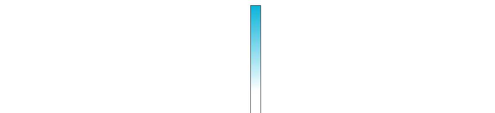Градієнтний малюнок
Картинка з силуетними тваринами робиться на прозорому тлі та висотою 198 пікселів, немає сенсу робити її на всю висоту шапки, оскільки вона займає лише частину. Фрагмент зображення показано на мал. Шахове поле означає прозорість.
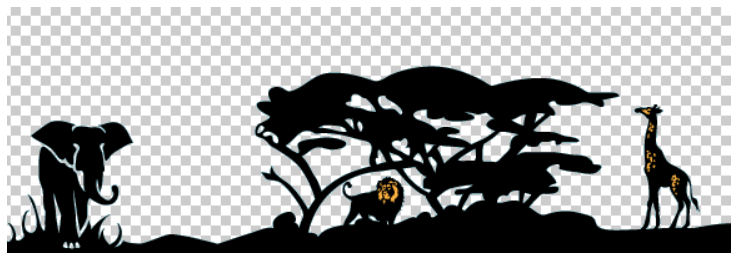Фонова картинка з прозорістю
Оскільки збереження цієї картинки йде у форматі PNG-8, який має лише один рівень прозорості, на відміну від 256 рівнів формату PNG-24, важливо забезпечити коректне накладення на градієнтний фон. Для цього при збереженні у Photoshop потрібно вказати колір країв (Matte) близький до середньої частини градієнта, де йде накладення силуету. Приблизно це колір #9de1f0. В цьому випадку не виникне брудних контурів навколо дерев та тварин, а картинка при накладенні на градієнт сприйматиметься як єдине ціле.
Два малюнки для фону шапки підготовлені, пишемо код HTML.
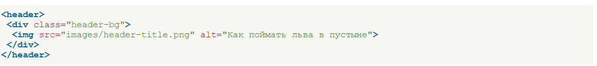І стиль для елемента <header> та шару header-bg.
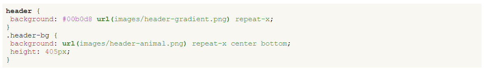Назва сайту
Название написано на облаке с растушёванными краями, что должно создать трудности при наложении на градиент. Есть два способа, как их обойти.
- Використовувати формат PNG-24 для збереження прозорості.
- Зберегти малюнок у форматі GIF або PNG-8 із фрагментом градієнта, а потім накласти малюнок на градієнт так, щоб збіг був з точністю до пікселя.
Очевидно, що другий спосіб має ряд недоліків - зображення не можна зрушити навіть на пару пікселів, воно прив'язане до градієнта, і якщо його градієнт змінити, доведеться змінювати картинку. Так що зберігаємо заголовок у форматі PNG-24. Код HTML залишиться незмінним, а стилі розширяться.
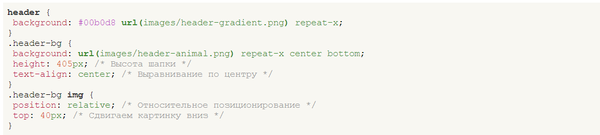Вирівнювання по центру робиться через властивість text-align, що додається до батька тега <timg>, а зсув вниз через властивість top. Щоб ця властивість спрацювала, необхідно для зображення задати відносне позиціонування за допомогою властивості position зі значенням relative.
На головній сторінці сайту картинка з назвою виводиться як завжди, на решті сторінок вона служить посиланням на головну сторінку. Для цього достатньо трохи змінити код:
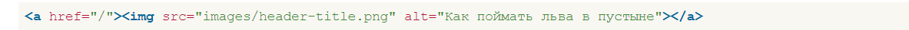Значення / атрибута href вказує на головну сторінку і працює тільки на веб-сервері, але ніяк не локально.
Остаточний код для шапки наведено у прикладі